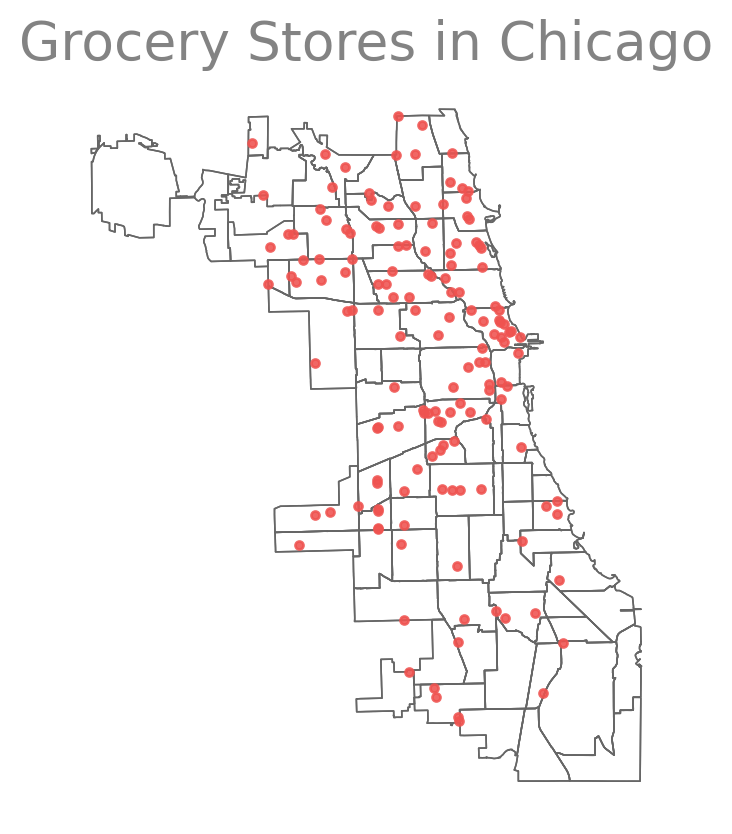
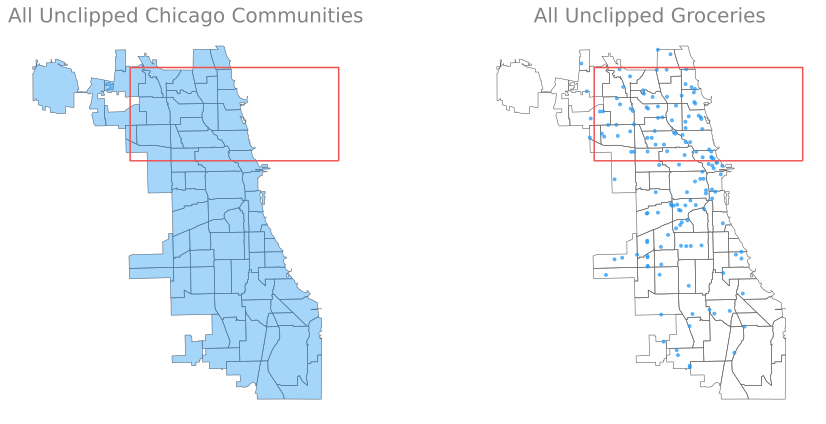
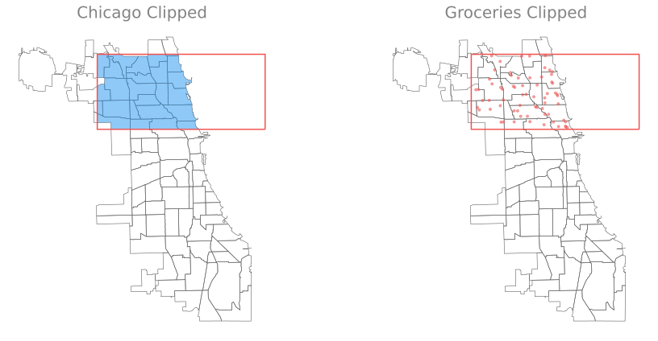
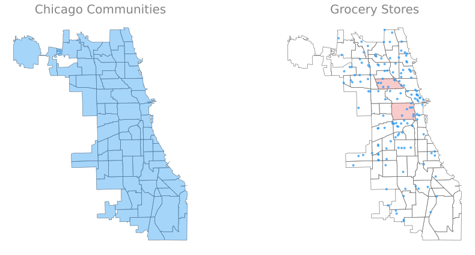
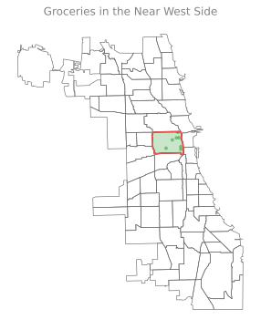
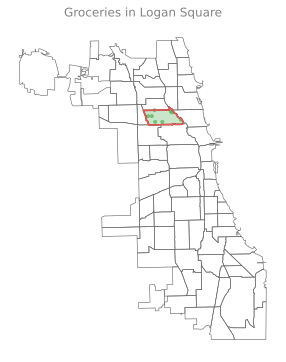
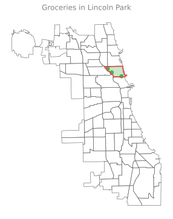

![]()
Imports
from rich.console import Console as Console
from enrich.style import STYLES
from rich.theme import Theme
console = Console(theme=Theme(STYLES), log_path=False, markup=True)from rich.console import Console as Console
from enrich.style import STYLES
from rich.theme import Theme
console = Console(theme=Theme(STYLES), log_path=False, markup=True)We will walk through an example that demonstrates how to clip geometries to the boundary of a polygon geometry using GeoPandas.
This example shows how to clip a set of vector geometries to the spatial extent / shape of another object.
Both sets of geometries must be opened with GeoPandas as GeoDataFrames and be in the same Coordinate Reference System (CRS) for the clip function from GeoPandas to work.
This example uses data from geodatasets, namely:
geoda.chicago-healthgeoda.groceriesalongside a custom rectangle geometry made with shapely and then turned into a GeoDataFrame.

The object to be clipped will be clipped to the full extent of the clip object.
If there are multiple polygons in clip object, the input data will be clipped to the total boundary of all polygons in clip object.
%load_ext autoreload
%autoreload 2
%matplotlib inline
import matplotlib_inline
import matplotlib.pyplot as plt
matplotlib_inline.backend_inline.set_matplotlib_formats('svg')
import geopandas as gpd
from shapely.geometry import box
import geodatasetsThe autoreload extension is already loaded. To reload it, use:
%reload_ext autoreloadBelow, the example GeoPandas data is imported and opened as a GeoDataFrame.
Additionally, a polygon is created with shapely and then converted into a GeoDataFrame with the same CRS as the GeoPandas dataset
import geodatasets
chicago = gpd.read_file(geodatasets.get_path("geoda.chicago_commpop"))
groceries = gpd.read_file(geodatasets.get_path("geoda.groceries")).to_crs(chicago.crs)Create a subset of the chicago data that is just the near west side
near_west_side = chicago[chicago["community"] == "NEAR WEST SIDE"]
lincoln_park = chicago[chicago["community"] == "LINCOLN PARK"]
logan_square = chicago[chicago["community"] == "LOGAN SQUARE"]Create a custom polygon
polygon = box(-87.8, 41.9, -87.5, 42)
poly_gdf = gpd.GeoDataFrame([1], geometry=[polygon], crs=chicago.crs)fig, (ax1, ax2) = plt.subplots(figsize=(14, 6), ncols=2, sharey='col')
poly_gdf.boundary.plot(ax=ax1, color=COLORS['red'])
chicago.boundary.plot(ax=ax1, color=COLORS['grey060'], linewidth=0.6, zorder=-1)
# near_west_side.boundary.plot(ax=ax2, color=COLORS['red'])
# near_west_side.plot(ax=ax2, color=COLORS['green'], alpha=0.3)
# west_town.plot(ax=ax2, color=COLORS['green'], alpha=0.3)
chicago.plot(ax=ax1, alpha=0.4)
poly_gdf.boundary.plot(ax=ax2, color=COLORS['red'])
chicago.boundary.plot(ax=ax2, color=COLORS['grey060'], linewidth=0.6, zorder=-1)
groceries.plot(ax=ax2, color=COLORS['blue'], zorder=1, marker='.', alpha=0.66)
ax1.set_title("All Unclipped Chicago Communities", fontsize=20)
ax2.set_title("All Unclipped Groceries", fontsize=20)
ax1.set_axis_off()
ax2.set_axis_off()
plt.tight_layout()
The object on which you call clip is the object that will be clipped.
The object you pass is the clip extent.
The returned output will be a new clipped GeoDataFrame. All of the attributes for each returned geometry will be retained when you clip.
Recall that the data must be in the same CRS in order to use the clip method.
If the data is not in the same CRS, be sure to use the GeoDataFrame.to_crs method to ensure both datasets are in the same CRS.
# clip the data to the boundary of the polygon
chicago_clipped = chicago.clip(polygon)
groceries_clipped = groceries.clip(polygon)
# create figure with two columns
fig, ax = plt.subplots(figsize=(14, 6), ncols=2, sharey='col')
# aggregate data into a dictionary for each column
clipped = {
'chicago': {
'ax': ax[0],
'color': 'C0',
'marker': None,
'data': chicago_clipped,
'label': 'Chicago Clipped'
},
'groceries': {
'ax': ax[1],
'color': 'C1',
'marker': '.',
'data': groceries_clipped,
'label': 'Groceries Clipped'
}
}
# iterate over the dictionary, plotting
# each entry in its own subplot (column)
for key, val in clipped.items():
_ = val['data'].plot(
ax=val['ax'],
color=val['color'],
marker=val['marker'],
alpha=0.5,
)
_ = chicago.boundary.plot(
ax=val['ax'],
color=COLORS['grey060'],
zorder=-1,
linewidth=0.6
)
ax = poly_gdf.boundary.plot(
ax=val['ax'],
color=COLORS['red']
)
ax.set_title(val['label'], fontsize=20)
ax.set_axis_off()
plt.tight_layout()
Next we’ll look at the distribution of grocery stores in two different communities.
fig, (ax1, ax2) = plt.subplots(figsize=(14, 6), ncols=2, sharey='col')
chicago.plot(ax=ax1, alpha=0.4)
# near_west_side.boundary.plot(ax=ax2, color=COLORS['red'])
# logan_square.boundary.plot(ax=ax2, color=COLORS['red'])
near_west_side.plot(ax=ax2, color=COLORS['red'], alpha=0.3)
logan_square.plot(ax=ax2, color=COLORS['red'], alpha=0.3)
chicago.boundary.plot(ax=ax1, color=COLORS['grey060'], linewidth=0.6, zorder=-1)
chicago.boundary.plot(ax=ax2, color=COLORS['grey060'], linewidth=0.6, zorder=-1)
groceries.plot(ax=ax2, color=COLORS['blue'], zorder=1, marker='.', alpha=0.66)
ax1.set_title("Chicago Communities", fontsize=20)
ax2.set_title("Grocery Stores", fontsize=20)
ax1.set_axis_off()
ax2.set_axis_off()
plt.tight_layout()
groceries_west_side = groceries.clip(near_west_side)
fig, ax = plt.subplots(figsize=(14, 6))
groceries_west_side.plot(ax=ax, color='C2', marker='.', alpha=0.6)
chicago.boundary.plot(ax=ax, color=COLORS['grey060'], linewidth=0.6, zorder=-1)
near_west_side.boundary.plot(ax=ax, color='#444444')
near_west_side.boundary.plot(ax=ax, color=COLORS['red'])
near_west_side.plot(ax=ax, color=COLORS['green'], alpha=0.3)
ax.set_title("Groceries in the Near West Side")
ax.set_axis_off()
groceries_logan_square = groceries.clip(logan_square)
fig, ax = plt.subplots(figsize=(14,6))
groceries_logan_square.plot(ax=ax, color='C2', marker='.', alpha=0.6)
chicago.boundary.plot(ax=ax, color=COLORS['grey060'], linewidth=0.6, zorder=-1)
logan_square.boundary.plot(ax=ax, color='#444444')
logan_square.boundary.plot(ax=ax, color=COLORS['red'])
logan_square.plot(ax=ax, color=COLORS['green'], alpha=0.3)
ax.set_title("Groceries in Logan Square")
ax.set_axis_off()
groceries_lp = groceries.clip(lincoln_park)
fig, ax = plt.subplots(figsize=(14,6))
groceries_lp.plot(ax=ax, color='C2')
chicago.boundary.plot(ax=ax, color=COLORS['grey060'], linewidth=0.6, zorder=-1)
lincoln_park.boundary.plot(ax=ax, color='#444444')
lincoln_park.boundary.plot(ax=ax, color=COLORS['red'])
lincoln_park.plot(ax=ax, color=COLORS['green'], alpha=0.3)
ax.set_title("Groceries in Lincoln Park")
ax.set_axis_off()
@misc{foreman2023,
author = {Foreman, Sam},
date = {2023-08-02},
url = {https://saforem2.github.io/climate-analysis},
langid = {en}
}